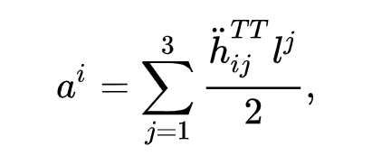
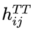
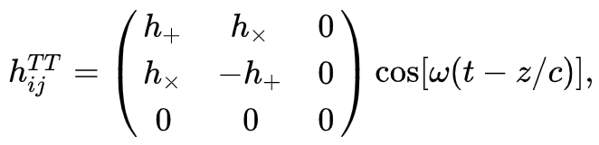

Открытие гравитационных волн
Открытие гравитационных волн было выполнено путем их прямого детектирования 14 сентября 2015 года коллаборациями LIGO и VIRGO; об открытии было объявлено 11 февраля 2016 года. Результаты опубликованы в журнале Physical Review Letters и ряде последующих статей. Событие получило обозначение GW150914. За экспериментальное обнаружение гравитационных волн в 2017 году была присуждена Нобелевская премия по физике.
Гравитационные волны и история их поиска
Существование гравитационных волн впервые было предсказано в 1916 году Альбертом Эйнштейном на основании общей теории относительности. Эти волны представляют собой изменения гравитационного поля, распространяющиеся подобно волнам. При прохождении гравитационной волны между двумя телами расстояние между ними изменяется. Относительное изменение этого расстояния служит мерой амплитуды волны.
Точнее говоря, в собственной системе отсчёта детектора гравитационная волна может в первом приближении рассматриваться как ньютоновская сила, действующая на второе тело из свободно висящей пары на удалении, задаваемом пространственным вектором от первого, вызывающая ускорение.
где  - возмущения метрики, то есть амплитуда гравитационной волны, в так называемой поперечной калибровке с нулевым следом, а точка обозначает производную по времени. В случае монохроматической волны частотой ω, распространяющейся вдоль оси z
где h+ и hx числа, выражающие амплитуду двух независимых поляризаций возможных гравитационных волн. В принципе практически любое событие, сопровождающееся ускоренным передвижением массы, порождает гравитационные волны (исключения - вращение идеально симметричного тела вокруг оси симметрии, центральносимметричное сжатие и расширение шарообразного тела). Однако гравитация - очень слабое взаимодействие, поэтому амплитуда этих волн чрезвычайно мала. Так, стальная колонна массой 10000 тонн, вращающаяся на пределе прочности стали - 10 оборотов в секунду - будет излучать в гравитационных волнах примерно 10-24 Вт.